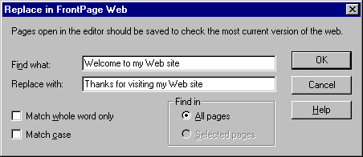

| ||||
The FrontPage Editor's Replace command makes it easy to find and replace content on selected pages in your FrontPage-based Web site. Text such as page titles added in the Page Properties dialog box or text contained in FrontPage components is not included in the Replace command.
Before replacing text on pages, you should first save and then close any open pages in the FrontPage Editor.
The Replace in FrontPage Web dialog box is displayed. In this dialog box, you can specify text to be found and the text it is to be replaced with. You can choose to replace text on all pages in your FrontPage-based Web site or on selected pages only.

Figure 1. Replacing text using the dialog box
Welcome to my Web site
Thanks for visiting my Web site
The Find Occurrences dialog box is displayed. In this dialog box, FrontPage reports its progress, as well as the option to proceed with the replacements.
The FrontPage Editor opens the home page and displays the Replace dialog box.
The greeting on the home page should now read "Thanks for visiting my Web site!"
Clicking Cancel closes the Replace dialog box. It does not undo any replacements that have already been made.
The greeting on the home page has been successfully changed.
Did you find this material useful? Gripes? Compliments? Suggestions for other articles? Write us!
© 1999 Microsoft Corporation. All rights reserved. Terms of use.